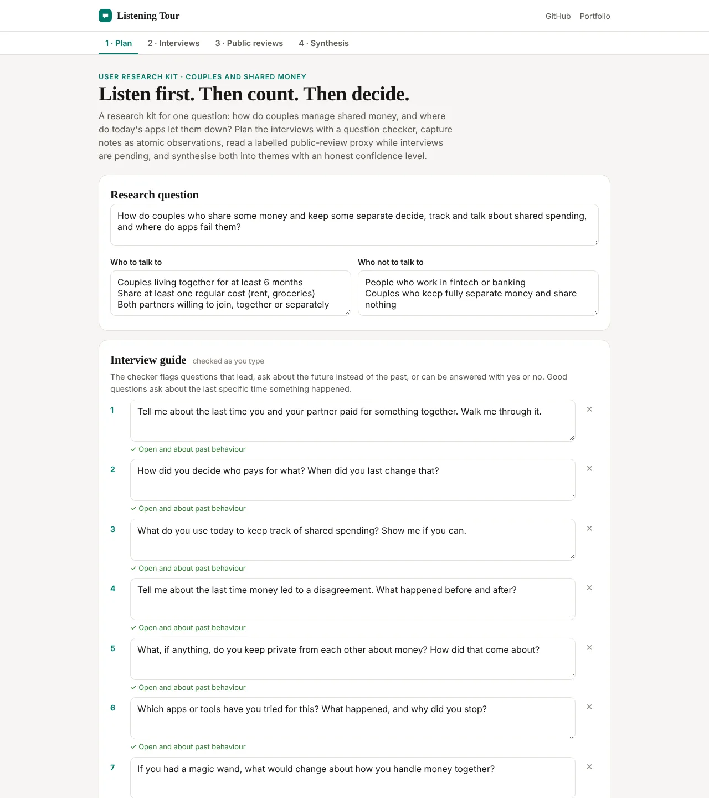

The problem
Interviews take weeks to recruit. I wanted the kit ready, and a way to use public reviews to sharpen questions without pretending they are research.

What it does
- Question checker for closed, leading and future questions.
- Interview notes marked as quote, paraphrase or observed.
- Review proxy with theme counts and ratings.
- Synthesis board with confidence from interviews only.
Findings and decisions
Proxy, signal to test
Bank connections come up often, with lower ratings
Sync and connection words appear in 18 of 45 reviews, averaging 3.5 stars against 3.89 overall.
Proxy, signal to test
Splitting sits with the lowest ratings
Splitting and who owes whom: 14 reviews at 2.93 stars, mostly from the splitting app in the sample.
What I would do next
- Run the five interviews.
- Hand-check the keyword codes on a sample.
- Feed confirmed themes into Zero to Launch.